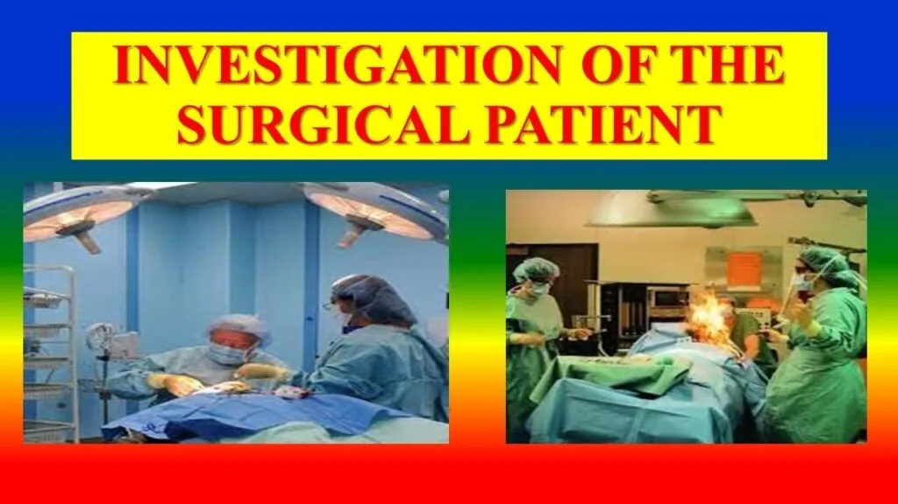

Expanded Nursing Uganda Explanation
Terms used in surgical nursing should be understood beyond a short definition. Link the concept to patient history, focused assessment, common risks, nursing priorities, documentation and evaluation of outcomes.
Contents — 31 sections (tap to expand)
01 Overview
This module unit is intended to provide students with the opportunity to learn techniques and approaches of providing nursing care for conditions related to surgical attention. The content in this unit includes, introduction to surgical nursing, common surgical conditions, pre- and post-operative management, natural body defense mechanisms and specific surgical conditions.
02 Definition of Surgery:
- Surgery is a specialized branch of medicine that involves the diagnosis, treatment, and management of diseases, injuries, or deformities through physical intervention, typically by cutting, manipulating, or repairing tissues and organs. It is performed using a combination of manual and instrumental techniques.
03 HISTORICAL BACKGROUND OF SURGERY:
The history of surgery is a testament to humanity's continuous efforts to heal and improve health, evolving from rudimentary practices to highly sophisticated procedures.
- Transition and Early Modern Surgery: Significant advancements began in the 19th century with the revolutionary discoveries of anesthesia and antiseptic/aseptic techniques. Anesthesia: The introduction of ether (by William Morton in 1846) and chloroform dramatically changed surgery by allowing patients to undergo painful procedures without consciousness or pain. This extended the duration and complexity of operations possible.
- Antiseptic and Aseptic Techniques: Joseph Lister's work in the mid-19th century, applying Louis Pasteur's germ theory, led to the use of carbolic acid as an antiseptic. This drastically reduced post-operative infections and mortality. Aseptic techniques, emphasizing sterile environments, instruments, and surgical attire, further minimized contamination.
- Specialization: Emergence of distinct surgical specialties (e.g., cardiothoracic, neurosurgery, orthopedics).
- Technological Advancements: Development of advanced imaging (X-rays, CT, MRI), minimally invasive techniques (laparoscopy, endoscopy), robotics, laser surgery, and microsurgery.
- Improved Diagnostics and Pre-operative Care: Better understanding of patient physiology, improved diagnostic tools, and meticulous pre-operative preparation have significantly enhanced patient outcomes.
- Post-operative Care: Advances in critical care, pain management, infection control, and rehabilitation have revolutionized recovery.
- Formal Training and Research: Establishment of rigorous surgical training programs and continuous research contribute to evidence-based practices and innovation.
- Implication of Surgery to Patients: From the patient's perspective, surgery has evolved from a terrifying last resort to a precise and often life-saving or quality-of-life-improving intervention. However, it still carries significant physical and psychological implications: Physical Implications: Pain, risk of infection, bleeding, scarring, potential for complications related to anesthesia, and recovery time.
- Psychological Implications: Anxiety, fear (of the unknown, pain, death, disfigurement), body image changes, loss of independence, and emotional distress.
04 TERMS USED IN SURGERY
- for an ordered list, with for the numbered term --> Abscess: A localized collection of pus.
- Adenoma: A benign epithelial tumour of glandular origin.
- Aneurysm: Dilation of an artery/vein.
- Colitis: Inflammation of the colon.
- Dysplasia: Abnormal development or growth of tissue organs or cells.
- Empyema: A collection of pus in a body cavity.
- Cutaneous: Relating to or existing on or affecting the skin.
- Gangrenous: Localized death and decomposition of body tissue, resulting from either obstructed circulation or bacterial infection.
- Haematoma: A solid swelling of clotted blood within the tissues.
- Haemorrhage: A heavy bleeding from a ruptured blood vessel.
- Necrosis: Death of most or all of the cells in an organ or tissue due to disease, injury or failure of the blood supply and hence tissue death (ischemia).
- Sepsis: The presence of pus-forming bacteria or their toxins in the blood or tissues.
- Slough: A piece of dead soft tissue. Or a necrotic tissue separated from the living structure.
- Stoma: Surgical opening/artificial opening made in an organ, especially an opening in the colon (colostomy) or ileum (ileostomy) made via the abdomen.
- Suture: The fine thread or other material used surgically to close a wound or join tissues, an immovable joint (especially between the bones of the skull).
- Thrombus: A blood clot that forms in a blood vessel and remains at the site of formation.
- Infection: Is the invasion of the body tissue by pathogenic microorganisms.
- Disinfectant: Is a chemical substance that is used for rendering only inanimate objects free from disease causing microorganisms with the exception of their spores. They include, phenol, chlorine.
- Anti-septic solution: Is a substance that is used on a person’s skin to inhibit the growth and activity of micro-organisms, but not necessarily destroying them.
- Contamination: Is the process by which something is rendered unclear or unsterile.
- Carriers: Are people or animals that show no symptoms of illness but have pathogens on or in their bodies that can be transferred to others.
- Disinfection: Is the elimination of virtually all pathogenic microorganism on inanimate objects with the exception of their spores, i.e., reducing the level of microbial contamination to an acceptably safe level.
05 COMMON SUFFIXES USED IN SURGERY
- for list items, with for the term --> Angio: relating to blood vessels e.g. angiograms, contrast imaging of an artery
- Antegrade: going in the direction of flow e.g. antegrade pyelogram; injection of contrast medium under imaging control into the renal pelvis percutaneously
- Chole: related to the ability tree or bill e.g. cholelithiasis; gall stones
- Cele: a cavity containing gas or fluid e.g. hydrocele, lymphocele, galactocele
- Ectasia: related to dilation of the ducts e.g. sialectasia; dilation of salivary gland ducts
- Ectomy: cutting something out e.g. gastrectomy
- Gram: an imaging technique using radio-opaque contrast medium e.g. cholangiogram; to visualize the bile ducts
- Lith: stone e.g. pyelolithotomy; removal of a stone from the renal pelvis by opening the renal pelvis
- Oscopy: the inspection of a cavity, tube or organ with an instrument e.g. cystoscopy inspection of the bladder
- Ostomy: opening something into another cavity or to the outside e.g colostomy; an opening of the colon on to the skin
- Oma: denotes tumour/ neoplasm
- Pyelo: relating to the pelvis of the kidney e.g. pyelogram; contrast imaging showing the renal pelvis
- Otomy: making an opening in something e.g. laparotomy; exploring the abdomen
- Per: going through a structure e.g. percutaneous; going through the skin
- Plasty: refashioning something to alter functioning e.g. angio-plasty; to widen an obstruction in an artery
- Retrograde: going in a reverse direction against the flow e.g. endoscopic retrograde, cholangiopancreatogram (ERC)
- itis: denotes inflammation
- rrhage: excessive flow
- pnea: relates to breathing
- rrhoea: means discharge
- plegia: means paralysis
- scopy: means examining
- galy: relates to enlargement of an organ/structure
- logy: study of
- ase: related to enzyme
- trans: going across a structure e.g percutaneous transluminal angioplasty
06 GENERAL CAUSES OF DISEASES
The study of causes of diseases is referred to as etiology.
07 THE GENERAL CAUSES INCLUDE:
- for an ordered list, with for the numbered term --> Congenital: It’s when an individual is born with a disease in any of the organs due to damage in early weeks of development while in the uterus.
- Hereditary: This is whereby an individual inherits (is passed on) the disease from the ancestors via genes e.g. sickle cell disease.
- Traumatic: These include gunshots, surgical operations, excessive heat, or cold, corrosive chemicals, poisonous gases and electricity.
- Mechanical: Those are any agencies that cause obstruction to the normal passages e.g. GIT, RT and blood vessels.
- Deficiency: These are due to the absence of diet substances necessary for normal health, growth and replacement e.g. Kwashiorkor, Marasmus, Rickets, etc.
- Metabolic disorders: Is the inability to deal with certain results of food. It may result in accumulation of unwanted chemical in the blood which may lead to trouble e.g. excess sugar in the blood which leads to diabetes mellitus.
- Tumours: These are over growth of cells which have undergone changes that makes them multiply themselves. This can be benign or malignant.
- Hypersensitivity: Some people are hypersensitive to small amounts of certain proteins and if exposed to them, they react. Hypersensitivity can be; An allergy
- Anaphylaxis.
- Degenerative diseases: The ageing process usually results in various conditions e.g. osteo-arthritis, stroke etc.
- Psychological factors: This can be an important cause of disease e.g. stress, anxiety, disappointments etc.
08 Aims of Surgery:
Surgery is performed with various objectives, often categorized by the primary goal of the intervention:
- Diagnostic Purpose: To obtain tissue samples (e.g., biopsy) or to explore the body to confirm or determine the cause of a disease or condition.
- Curative Purpose: To remove diseased tissue or an organ, repair damaged structures, or correct a deformity to cure a disease (e.g., appendectomy for appendicitis, tumor excision).
- Palliative Purpose: To relieve symptoms or improve quality of life when a cure is not possible (e.g., tumor debulking to reduce pressure, colostomy for bowel obstruction).
- Preventive Purpose (Prophylactic): To prevent the occurrence of a disease or complication in an at-risk individual (e.g., prophylactic mastectomy for high-risk breast cancer, removal of a precancerous polyp).
- Reconstructive/Restorative Purpose: To repair or restore damaged tissue or organs, often after injury or disease (e.g., skin graft for burns, joint replacement).
- Cosmetic Purpose: To improve physical appearance (e.g., rhinoplasty, facelift), though this often overlaps with reconstructive surgery.
09 Types and Classification of Surgery:
Surgery can be classified based on urgency, invasiveness, and purpose.
- Emergency Surgery: Performed immediately to save a life, preserve function, or restore a vital body part (e.g., severe bleeding, ruptured appendix).
- Urgent Surgery: Performed within 24-48 hours to address a condition that requires prompt intervention but is not immediately life-threatening (e.g., acute cholecystitis, kidney stones with obstruction).
- Planned or Elective Surgery: Scheduled in advance, often to correct a non-life-threatening condition, improve quality of life, or for cosmetic reasons (e.g., cataract removal, hernia repair). This allows for thorough pre-operative assessment and patient preparation.
- Major Surgery: Involves significant risk, often requires general anesthesia, extensive tissue manipulation, and typically involves a longer hospital stay (e.g., open-heart surgery, organ transplantation).
- Minor Surgery: Involves minimal risk, often performed under local or regional anesthesia, limited tissue manipulation, and may be done in an outpatient setting (e.g., removal of a skin lesion, carpal tunnel release).
- Multistage Surgery: Procedures performed in several separate operations to achieve a complete outcome, often due to the complexity of the condition or the patient's recovery needs (e.g., reconstructive surgery after severe trauma).
- Invasiveness: Open Surgery: Involves a large incision to access the surgical site.
- Minimally Invasive Surgery: Performed through small incisions using specialized instruments and cameras (e.g., laparoscopic surgery, robotic surgery, endoscopic surgery).
10 Principles of Surgery:
Fundamental principles guide surgical practice to ensure patient safety and optimal outcomes.
- Safe Administration of Anesthesia: Ensuring the patient's physiological stability and comfort throughout the procedure, minimizing risks associated with anesthetic agents.
- Asepsis and Infection Control: Strict adherence to sterile techniques to prevent surgical site infections, including meticulous hand hygiene, sterile draping, and instrument sterilization.
- Hemostasis (Control of Bleeding): Meticulous control of bleeding to maintain patient's circulatory volume and provide a clear surgical field.
- Gentle Tissue Handling: Minimizing trauma to tissues to promote healing and reduce post-operative pain and complications.
- Accurate Anatomical Dissection: Precise identification and manipulation of anatomical structures to avoid damage to vital organs and achieve the surgical objective.
- Prevention/Treatment of Circulatory Failure: Maintaining adequate fluid balance, blood pressure, and tissue perfusion throughout the perioperative period.
- Quick and Effective Wound Healing: Employing proper surgical closure techniques, providing optimal wound care, and managing factors that can impair healing.
- Prevention/Treatment of Complications: Proactive identification and management of potential complications such as DVT, pulmonary embolism, respiratory compromise, and organ dysfunction.
- Restoration of Function: The ultimate goal of many surgeries, aiming to return the affected body part or system to its normal or near-normal function.
- Patient Safety and Advocacy: Prioritizing patient well-being, verifying correct patient and site, and advocating for the patient throughout the surgical journey.
11 Patient's Concept of Disease:
A patient's concept of their disease significantly influences their acceptance of surgical intervention, adherence to pre- and post-operative instructions, and overall recovery. This concept is shaped by a multitude of factors, including:
- Personal Beliefs and Experiences: Prior experiences with illness, surgery, or healthcare, as well as personal beliefs about health and illness, can heavily influence a patient's understanding and emotional response to a new diagnosis.
- Cultural Background: Cultural beliefs about the causation of disease (e.g., spiritual, supernatural, environmental), traditional healing practices, and societal roles can affect how a patient perceives their illness and the proposed surgical treatment.
- Socioeconomic Status: Access to information, educational background, and financial stability can impact a patient's ability to understand complex medical information and comply with treatment plans.
- Emotional State: Feelings of fear, anxiety, depression, or denial can distort a patient's perception of their illness and their capacity to process information about their condition.
- Information Received: The clarity, completeness, and manner in which information about the disease and surgery is conveyed by healthcare professionals plays a crucial role. Misinformation or lack of understanding can lead to mistrust or non-adherence.
- Support Systems: The presence or absence of family and social support can influence a patient's emotional well-being and ability to cope with their illness and recovery.
- Perceived Severity and Impact: How serious the patient perceives their condition to be, and its anticipated impact on their life, livelihood, and family, will shape their perspective.
Nurses play a critical role in assessing and understanding the patient's concept of disease, clarifying misconceptions, providing culturally sensitive care, and offering appropriate emotional and educational support.
12 Factors Affecting the Success of Surgical Care:
The success of surgical care is multifaceted, extending beyond the technical proficiency of the surgeon. It encompasses a complex interplay of patient-related, disease-related, surgical team-related, and systemic factors.
- Overall Health Status and Comorbidities: Pre-existing conditions (e.g., cardiovascular disease, diabetes, renal impairment, malnutrition, obesity) can significantly impact surgical risk, recovery, and susceptibility to complications.
- Age: Extremes of age (very young or very old) often present unique physiological challenges and increased risks.
- Nutritional Status: Poor nutrition can impair wound healing, immune function, and overall recovery.
- Psychological State: High levels of anxiety, stress, or depression can negatively affect pain perception, immune response, and patient cooperation.
- Compliance with Pre/Post-operative Instructions: Adherence to dietary restrictions, medication regimens, and post-operative rehabilitation is crucial for optimal outcomes.
- Lifestyle Factors: Smoking, alcohol consumption, and substance abuse can increase surgical risks and hinder recovery.
- Severity and Stage of Disease: Advanced disease or critical conditions generally carry higher surgical risks and potentially less favorable outcomes.
- Type and Location of Pathology: The nature of the condition and its anatomical location can influence surgical complexity and potential for complications.
- Presence of Infection: Active infection at the surgical site or systemically can increase the risk of complications and delay healing.
- Surgeon's Expertise and Experience: The skill, experience, and specialization of the surgical team directly influence the technical success of the procedure.
- Anesthesia Management: Safe and effective administration of anesthesia, tailored to the patient's needs and the procedure, is vital.
- Aseptic Technique and Infection Control: Strict adherence to sterilization and aseptic practices minimizes the risk of surgical site infections.
- Pre-operative Assessment and Optimization: Thorough evaluation of the patient before surgery to identify and mitigate risks.
- Intra-operative Management: Meticulous surgical technique, proper hemostasis, and efficient management of the surgical environment.
- Post-operative Care: Comprehensive nursing care, pain management, early mobilization, and monitoring for complications.
- Team Communication and Coordination: Effective communication among all members of the multidisciplinary surgical team (surgeon, anesthesiologist, nurses, technicians) is paramount for seamless and safe care.
- Availability of Resources: Access to appropriate equipment, technology, blood products, and medical supplies.
- Hospital Infrastructure and Policies: Quality of facilities, staffing levels, and adherence to evidence-based protocols.
- Access to Follow-up Care: Availability of timely and appropriate post-discharge care, including rehabilitation and specialist consultations.
- Socioeconomic Support Systems: Patient's access to social support, transportation, and home care resources after discharge.
13 ANESTHESIA
Anesthesia is a critical component of modern surgical practice, derived from the Greek word "anaisthesia," meaning "without sensation." It is a pharmacologically induced and reversible state characterized by controlled and temporary loss of sensation, consciousness, or both, enabling painful medical procedures or surgical operations to be performed without the patient experiencing pain, touch, pressure, or temperature. The primary aim is to ensure patient comfort, safety, and cooperation during invasive procedures.
Medications that cause anesthesia are called anesthetics. These agents work by interfering with the transmission of nerve signals to the brain, thereby preventing the processing of painful stimuli. When the anesthetic effect wears off, nerve signals resume normal function, and sensation returns.
Anesthetics exert their effects by interacting with various components of the nervous system, primarily by altering the flow of ions across nerve cell membranes, which in turn inhibits the generation and propagation of electrical signals (nerve impulses). Specifically:
- They can block voltage-gated sodium channels in nerve axons, preventing the initiation and conduction of action potentials (nerve signals).
- They can enhance the activity of inhibitory neurotransmitters (like GABA) or suppress excitatory neurotransmitters, leading to a general depression of central nervous system activity.
- The precise mechanisms vary depending on the class of anesthetic (e.g., local anesthetics directly block nerve conduction, while general anesthetics primarily affect the brain and spinal cord).
By stopping these nerve signals from reaching the brain, anesthetics allow medical procedures to be carried out without the patient experiencing pain or awareness. As the anesthetic is metabolized and eliminated from the body, its effects dissipate, allowing nerve signals to function normally and sensation to return.
Anesthesia is categorized based on the extent of the body affected and the level of consciousness maintained:
- Local Anesthesia: This involves numbing a small, specific area of the body by injecting an anesthetic agent directly into the tissues around the nerves supplying that area. The patient remains fully conscious but does not feel pain in the numbed region. It is typically used for minor procedures (e.g., dental procedures, suturing a small cut, skin biopsies).
- Regional Anesthesia: This type of anesthesia blocks sensation in a larger region of the body, such as an entire limb or the lower half of the body, by injecting anesthetic near a cluster of nerves (nerve block) or into the spinal canal. The patient typically remains conscious but may be sedated. Spinal Anesthesia: Anesthetic is injected into the cerebrospinal fluid (CSF) in the subarachnoid space surrounding the spinal cord. This rapidly produces profound numbness and muscle relaxation in the lower body, used for lower abdominal, pelvic, or lower limb surgeries.
- Epidural Anesthesia: Anesthetic is injected into the epidural space (outside the dura mater, the outermost membrane covering the spinal cord). A catheter can be left in place to allow for continuous or repeated administration of medication, providing prolonged pain relief. Commonly used for childbirth (labor analgesia) and surgeries of the lower body.
- Peripheral Nerve Blocks: Anesthetic is injected near specific nerves or nerve plexuses (networks of nerves) to numb a particular limb or area (e.g., brachial plexus block for arm surgery, femoral nerve block for leg surgery).
- General Anesthesia: This induces a state of controlled, reversible unconsciousness, where the patient is completely unaware and experiences no pain or memory of the procedure. It involves a combination of medications administered intravenously and/or by inhalation. The patient's vital functions (breathing, heart rate) are carefully monitored and supported, often requiring mechanical ventilation. It is used for major surgeries or procedures that require the patient to be completely still and unaware.
- Sedation: This involves administering medications to depress the central nervous system, producing a state of reduced awareness, relaxation, and sometimes amnesia, but the patient remains able to respond to verbal commands or light tactile stimulation. It is used for uncomfortable or anxiety-provoking procedures that do not require full general anesthesia (e.g., colonoscopy, some dental procedures, minor orthopaedic reductions). Levels can range from minimal (anxiolysis) to deep sedation.
The method of delivery depends on the type of anesthesia and the specific agent used:
- Inhalation: Volatile liquid anesthetics (e.g., Sevoflurane, Isoflurane) are vaporized and delivered as gases through a mask or endotracheal tube into the patient's respiratory system for general anesthesia. Nitrous oxide is also given via inhalation.
- Intravenous (IV): Many anesthetic agents (e.g., Propofol, Ketamine, Midazolam, Fentanyl) are administered directly into the bloodstream through a vein, used for induction of general anesthesia, maintenance of anesthesia, or for sedation.
- Local Infiltration: Anesthetic is injected directly into the tissue surrounding the surgical site (e.g., Lidocaine for suturing a wound).
- Regional Injection: Anesthetic is injected near specific nerves or into the epidural or subarachnoid space (e.g., Bupivacaine for spinal or epidural blocks).
- Topical/Transdermal: Applied to the skin or mucous membranes (e.g., lidocaine cream for numbing skin before an injection, sprays for throat numbing).
While generally safe, anesthetics can cause various side effects, most of which are temporary and manageable:
- Gastrointestinal: Feeling sick (nausea) or vomiting, which can be managed with antiemetics.
- Neurological: Dizziness and feeling faint, headache (especially after spinal or epidural anesthesia), confusion or disorientation (particularly in older adults).
- Temperature Regulation: Feeling cold and shivering (post-anesthesia shivering is common).
- Local Reactions: Bruising and soreness at the injection site (for local or regional blocks).
- Skin Reactions: Itchiness (especially with opioid use).
- Throat Irritation: Sore throat or hoarseness (after endotracheal intubation for general anesthesia).
- Muscle Aches: Generalized muscle pain from muscle relaxants used during general anesthesia.
Serious complications are rare but can occur and are usually discussed during the pre-operative consent process:
- Allergic Reactions: Severe allergic reactions (anaphylaxis) to anesthetic agents, though rare, can be life-threatening.
- Cardiovascular Complications: Hypotension (low blood pressure), arrhythmias (irregular heartbeats), myocardial infarction (heart attack), or stroke, particularly in patients with pre-existing cardiac conditions.
- Respiratory Complications: Respiratory depression, aspiration of gastric contents into the lungs (pneumonitis), bronchospasm, or laryngospasm.
- Nerve Damage: Temporary or, rarely, permanent nerve damage (causing prolonged numbness, weakness, or paralysis) due to direct trauma from injection or compression.
- Malignant Hyperthermia: A rare, life-threatening genetic condition triggered by certain general anesthetics, leading to a rapid rise in body temperature and muscle rigidity.
- Awareness During Anesthesia: A rare occurrence where a patient gains some level of consciousness during general anesthesia.
- Death: Extremely rare, but possible, particularly in patients with severe underlying health conditions.
14 Nurse’s Role in Surgical Diagnosis
The nurse plays a pivotal and continuous role in the diagnostic phase of surgical care. While the surgeon makes the definitive diagnosis, the nurse's observations, assessments, and data collection are crucial for accurate, timely, and holistic diagnosis, contributing significantly to the patient's care plan.
- Taking a Comprehensive Patient History: The nurse often conducts the initial and ongoing patient assessments, collecting subjective data through detailed history taking. This includes the chief complaint, history of present illness, past medical and surgical history, family history, social history (e.g., smoking, alcohol, substance use), medication history, allergies, and review of systems. Proper documentation of this history is essential for the medical team.
- Performing Physical Assessments and Documenting Observations: The nurse regularly performs physical assessments (e.g., vital signs, head-to-toe assessment, focused assessment on the affected area). Accurately recording and monitoring these objective observations (e.g., temperature, pulse, respiration, blood pressure, pain level, wound characteristics, changes in patient condition) provides critical data points for diagnostic reasoning.
- Assisting with Diagnostic Procedures and Examinations: The nurse prepares the patient and the environment for physical examinations and various diagnostic tests. This includes setting up equipment (e.g., for physical exam, wound assessment), ensuring patient comfort and privacy, providing explanations of procedures, and assisting the physician as needed during examinations or specimen collection.
- Carrying Out Ordered Investigations and Other Orders: The nurse is responsible for ensuring that prescribed diagnostic tests (e.g., blood tests, imaging studies like X-rays, CT scans, MRI, ECG) are performed correctly and that specimens are collected and transported appropriately. This includes preparing the patient for the test (e.g., NPO status, contrast dye administration), verifying orders, and ensuring patient safety during the process.
- Patient Education and Preparation: Explaining the purpose of diagnostic tests and procedures to the patient, ensuring understanding and compliance.
- Recognizing and Reporting Changes: Constantly observing the patient for changes in symptoms, physical signs, or responses to interventions, and promptly reporting significant findings to the medical team.
- Advocacy: Advocating for the patient's needs and ensuring that all necessary diagnostic steps are taken to arrive at an accurate diagnosis.
15 Identification of a Patient (Patient Safety and Verification)
Correct patient identification is a fundamental and non-negotiable principle in healthcare, especially in the surgical setting, to prevent errors and ensure patient safety. Errors in patient identification can lead to wrong-patient, wrong-site, or wrong-procedure surgeries, medication errors, and incorrect test results.
- Using Multiple Identifiers: Patients should be identified by at least two unique identifiers, never by room or bed number alone. Acceptable identifiers include: Patient's full name (first and last).
- Date of birth.
- Medical record number.
- Active Patient Participation: Whenever possible, the patient should be actively involved in the identification process by stating their name and date of birth. Nurses should be aware that some patients may respond "yes" when another patient's name is called due to confusion, hearing impairment, or a desire to be cooperative; therefore, asking open-ended questions like "Can you please state your full name and date of birth?" is crucial.
- Addressing Bed Swaps: Nurses must be vigilant about potential bed or room changes without their knowledge. Re-identification of the patient should occur at every significant interaction, including medication administration, before procedures, and before transport.
- Site Marking for Surgical Procedures: For procedures involving laterality (e.g., right vs. left limb), multiple structures (e.g., specific finger), or levels (e.g., spinal surgery), the surgical site should be clearly and unambiguously marked by the surgeon with indelible ink while the patient is awake and involved in the process. This is a critical component of the "Universal Protocol" for preventing wrong-site, wrong-procedure, wrong-person surgery.
- "Time Out" Procedure: Immediately before the start of any invasive procedure, a "time out" (or pause for cause) is performed by the entire surgical team. During this time-out, the team collectively confirms: The correct patient.
- The correct site.
- The correct procedure.
- Availability of correct implants/equipment.
- Wristbands/Identification Bands: Patients should wear identification wristbands with their unique identifiers throughout their hospital stay. These should be checked against medical records before any intervention.
16 DECONTAMINATION
Decontamination is a crucial initial step in the reprocessing of reusable medical instruments and equipment. It refers to the process of physically or chemically removing or neutralizing harmful substances, particularly pathogenic microorganisms, from objects or surfaces to render them safe for subsequent handling, cleaning, and sterilization. The goal of decontamination is to protect healthcare workers from exposure to potentially infectious materials and to prevent cross-contamination.
17 Principles of Decontamination:
- Risk Reduction: Reduces the bioburden (number of microorganisms) on instruments, making them safer to handle for staff involved in cleaning and sterilization.
- Immediate Action: Should occur as soon as possible after use to prevent drying of organic matter (blood, tissue), which makes cleaning more difficult.
- Personal Protective Equipment (PPE): Healthcare workers involved in decontamination must wear appropriate PPE, including gloves, gowns, masks, and eye protection, to prevent exposure to contaminants.
18 Methods of Decontamination:
- Manual Cleaning (Pre-cleaning): Initial step often done at the point of use or in a designated decontamination area.
- Involves rinsing instruments with cool water to remove gross contamination, followed by scrubbing with brushes using enzymatic detergents or neutral pH detergents.
- This step is critical as sterilization cannot compensate for inadequate cleaning.
- Automated Cleaning: Ultrasonic Cleaners: Use high-frequency sound waves to create cavitation bubbles that dislodge debris from instruments, especially in hard-to-reach areas.
- Washer-Disinfectors: Automated machines that clean and thermally disinfect instruments, rendering them safe for handling before sterilization. They often include pre-rinse, wash, rinse, and thermal disinfection cycles.
- Chemical Decontamination: Use of chemical solutions to kill or inactivate microorganisms. Often used for heat-sensitive instruments or for surface disinfection.
- Examples include glutaraldehyde or hydrogen peroxide solutions, but these are typically for high-level disinfection rather than full sterilization.
19 Importance in Surgical Nursing:
- Nurses are often responsible for the initial decontamination at the point of use (e.g., wiping instruments during surgery) and ensuring proper transport of soiled instruments to the central sterile supply department.
- Understanding decontamination processes is vital for preventing surgical site infections and maintaining a safe environment for both patients and staff.
20 STERILIZATION
Sterilization is the process by which all forms of microbial life, including bacteria, viruses, fungi, and highly resistant bacterial spores, are completely destroyed or removed from an object or surface. It represents the highest level of microbial killing and is essential for any medical device or instrument that will come into contact with sterile body tissues or the bloodstream during surgical procedures. The aim is to prevent healthcare-associated infections (HAIs).
21 Key Principles of Sterilization:
- "All or Nothing": An item is either sterile or not sterile; there are no degrees of sterility.
- Packaging Integrity: Sterile items must remain in intact, undamaged packaging until the point of use to maintain sterility.
- Time-Related or Event-Related Sterility: Sterility is maintained until the package is opened, damaged, or expires, depending on the storage conditions and packaging.
- Cleaning First: Sterilization cannot effectively occur if instruments are not thoroughly cleaned and decontaminated beforehand.
22 Common Methods of Sterilization:
- Steam Sterilization (Autoclaving): The most common, reliable, and cost-effective method for heat- and moisture-stable items.
- Uses saturated steam under pressure at high temperatures (e.g., 121°C or 132°C) for a specific duration.
- Works by denaturing and coagulating proteins within microorganisms.
- Dry Heat Sterilization: Used for materials that can be damaged by moisture (e.g., powders, oils, heat-stable glassware).
- Involves exposure to high temperatures (e.g., 160°C to 170°C) for longer periods than steam sterilization.
- Works by oxidation of cell components.
- Ethylene Oxide (EtO) Sterilization: Used for heat- and moisture-sensitive medical devices.
- A colorless, flammable gas that kills microorganisms by alkylation of proteins and nucleic acids.
- Requires a lengthy aeration time to dissipate residual EtO, which is toxic and carcinogenic.
- Hydrogen Peroxide Gas Plasma Sterilization (e.g., Sterrad): A low-temperature sterilization method suitable for heat- and moisture-sensitive instruments.
- Uses hydrogen peroxide vapor in a plasma state, which generates reactive free radicals that destroy microorganisms.
- Faster cycle times and safer than EtO as it produces non-toxic byproducts (water and oxygen).
- Peracetic Acid Sterilization (e.g., Steris System): A liquid chemical sterilant used for immersible, heat-sensitive instruments, often used for flexible endoscopes.
- Rapidly destroys microorganisms by oxidation.
23 Monitoring Sterilization:
Sterilization processes are monitored using various indicators to ensure effectiveness:
- Mechanical Indicators: Gauges and displays on the sterilizer that show temperature, pressure, and exposure time.
- Chemical Indicators: Tapes, strips, or packages that change color when exposed to specific sterilization conditions (e.g., heat, steam, EtO). They indicate that the item has been processed, but not necessarily that it is sterile.
- Biological Indicators: Vials containing highly resistant bacterial spores (e.g., Geobacillus stearothermophilus for steam, Bacillus atrophaeus for EtO/dry heat). These are the only indicators that directly monitor the lethality of the sterilization process by demonstrating whether the most resistant organisms have been killed.
24 Role of the Nurse in Sterilization:
- Understanding the principles of sterility and aseptic technique.
- Checking the integrity of sterile packaging before opening.
- Maintaining a sterile field during surgical procedures.
- Properly handling and storing sterile supplies.
- Advocating for correct sterilization practices within the healthcare setting.
25 CONSENT IN SURGICAL NURSING (INFORMED CONSENT)
Informed consent is a cornerstone of ethical and legal medical practice, particularly in surgical nursing. It is a process by which a patient, or their legally authorized representative, grants voluntary permission for a medical procedure or treatment only after receiving and comprehending all relevant information about it. This ensures patient autonomy and protects their right to self-determination regarding their healthcare decisions.
26 Key Elements of Valid Informed Consent:
- Disclosure of Information: The healthcare provider (typically the physician or surgeon performing the procedure) must provide the patient with comprehensive information, including: The nature of the proposed procedure or treatment.
- The purpose of the procedure (what it aims to achieve).
- The expected benefits of the procedure.
- The potential risks, common side effects, and serious complications associated with the procedure (including those related to anesthesia).
- Available alternative treatments, including their risks and benefits.
- The consequences of not undergoing the proposed procedure.
- Patient Understanding: The patient must be able to comprehend the information provided. The information should be presented in a language and manner understandable to the patient, avoiding medical jargon. The provider should assess the patient's understanding by asking open-ended questions.
- Voluntariness: The patient's decision to consent or refuse treatment must be made freely, without any form of coercion, manipulation, or undue pressure from healthcare providers, family, or others.
- Competence/Capacity: The patient must have the mental capacity to make healthcare decisions. This means they must be able to understand the information, appreciate the consequences of their decision, and communicate their choice. If a patient is deemed incompetent (e.g., due to severe cognitive impairment, unconsciousness), a legally appointed surrogate decision-maker (e.g., power of attorney for healthcare, legal guardian, next of kin in a hierarchical order defined by law) will provide consent on their behalf.
27 Role of the Nurse in Informed Consent:
While the responsibility for obtaining informed consent rests with the physician performing the procedure, nurses play a crucial and multifaceted role in the informed consent process:
- Reinforcing Information and Clarifying: Nurses often reinforce the information provided by the physician, clarify any misunderstandings the patient may have, and answer questions within their scope of practice. They should not provide new information that changes the scope of the consent.
- Assessing Patient Understanding: Nurses are frequently present during the consent discussion or review the consent form with the patient. They can assess the patient's comprehension and identify if the patient has further questions or appears to be unduly influenced.
- Witnessing the Signature: Nurses often witness the patient's signature on the consent form. By witnessing, the nurse is verifying that the patient signed the form and that, to their knowledge, the patient appeared to be competent and voluntarily signed. It does not imply that the nurse provided all the information or explained the procedure.
- Advocating for the Patient: If a nurse believes the patient does not understand the information, is being coerced, or is not competent, they have an ethical responsibility to advocate for the patient. This may involve notifying the physician, nursing supervisor, or ethics committee.
- Documentation: Accurately documenting the informed consent process, including who provided information, when it was discussed, and any patient questions or concerns, is essential.
- Ensuring Valid Consent Before Procedures: Before any surgical procedure, the nurse is responsible for verifying that a valid informed consent form is present in the patient's chart and that it is complete and signed.
Informed consent is an ongoing process, not a one-time event, and applies to changes in treatment plans or additional procedures that may arise during the course of care.
28 Nursing Uganda Clinical Lens
Use Introduction to surgical Nursing as a practical nursing topic, not only a memorized definition. Prioritize airway, breathing, circulation, pain, asepsis, wound healing and early complication detection.
- What to understand first: define introduction to surgical nursing, identify the normal or expected pattern, then explain what changes when the patient is unwell.
- Why it matters in care: the nurse must recognize risk early, explain findings clearly, document accurately and know when to escalate.
- How to revise it: connect each point to assessment, nursing diagnosis or care problem, intervention, rationale and evaluation.
29 Assessment Guide
- Vital signs, pain, bleeding, perfusion, level of consciousness and injury pattern.
- Wound appearance, drainage, odour, swelling, temperature and surrounding skin.
- Fluid balance, mobility, nutrition, surgical site risk and ordered investigations.
30 Nursing Priorities, Rationales and Outcomes
- Stabilize urgent problems first, then prepare for investigations or theatre care.
- Maintain aseptic technique, pain control, wound care and documentation.
- Prevent shock, infection, pressure injury, deep vein thrombosis and delayed healing.
The rationale for these priorities is patient safety: nursing actions should prevent deterioration, reduce discomfort, support recovery and create clear evidence for the next caregiver.
- Expected outcome: The patient remains stable, wound healing progresses, pain is controlled and complications are recognized early.
31 Patient Teaching and Revision Check
- Explain introduction to surgical nursing in simple language the patient or caregiver can repeat back.
- Teach warning signs, medicine or follow-up instructions, hygiene or lifestyle points where relevant.
- For exams, prepare a short answer using: definition, causes or risk factors, signs, assessment, management, complications and prevention.
- For ward practice, document baseline findings, actions taken, patient response and the plan for review.
Illustrations and Diagrams (1)

Related Video Lectures
Watch nursing lecture videos on YouTube for this topic. Opens in a new tab.
Watch on YouTubeExternal link: YouTube may use its own cookies and terms. Nursing Uganda is not affiliated with YouTube.